| year | school_id | number_of_students | avg_score | |
|---|---|---|---|---|
| 16670 | 2007 | 33062633 | 68 | 82.97 |
| 16796 | 2007 | 33065403 | 172 | 82.04 |
| 16668 | 2005 | 33062633 | 59 | 81.89 |
| 16794 | 2005 | 33065403 | 177 | 81.66 |
| 10043 | 2007 | 29342880 | 43 | 80.32 |
ECON526: Quantitative Economics with Data Science Applications
Uncertainty Quantification in Applied Economics
Overview
Summary
Last class, we covered the meaning of causal effects and some of the challenges of estimating them from observational data.
Today, we will discuss how we measure the uncertainty associated with our estimates of causal effects.
We will also introduce the bias-variance tradeoff and how it relates to the uncertainty of our estimates.
Bias
Bias
Remember that the bias of an estimator is the difference between the expected value of the estimator and the true value of the parameter we are trying to estimate.
There are a number of types of bias that can arise in our estimators.
In causal inference, we are often interested in the ATE or ATT.
- Much of the discussion of bias in causal inference is focused on the bias of estimators of these quantities.
- The estimator we are usually concerned about is the difference in sample means between the treatment and control groups.
- This particular bias is given by the formula \(E[Y\mid T=1] - E[Y\mid T=0] = \text{ATT} + E[Y_0\mid T=1] - E[Y_0\mid T=0]\)
Bias
- Some types of bias are due to the fact that we are using an estimator that is not the best one for the parameter we are trying to estimate.
- These types of bias can often be fixed by getting more data, or by tweaking the estimator itself.
- For example, while \(\hat{\sigma}^2 = \frac{1}{n}\sum_{i=1}^{n} (x-\bar{x})^2\) seems like a natural estimator for the variance of a random variable \(x\), it’s expected value is actually \(E[\hat{\sigma}^2]=\frac{n-1}{n}\sigma^2 = \sigma^2 - \frac{1}{n}\sigma^2\leftarrow \text{(bias)}\).
- We can fix this by using \(\frac{1}{n-1}\sum_{i=1}^n (x-\bar{x})^2\) instead. (The Bessel correction)
- Note that \(\lim_{n\rightarrow \infty} \frac{1}{n} = 0\), so this bias term vanishes as we get more data. This type of estimator is called consistent.
Bias
Now look back at the formula \[ E[Y\mid T=1] - E[Y\mid T=0] = \text{ATT} + \underbrace{E[Y_0\mid T=1] - E[Y_0\mid T=0]}_{\text{bias}} \]
Notice that there is nothing about this bias term that will force it to go to zero as we get more data.
These types of bias, like omitted variable bias, and selection bias are more due to the fact that we are ignoring some important aspect of the data-generating process, therefore they can’t be fixed by simply getting more data.
Standard Errors
Standard Errors
- Usually the estimators we study are based on sample averages of random variables.
- If we don’t have a lot of data, and the data-generating process has a lot of variation, then our sample average will be very sensitive to the particular sample we draw.
- As we get more data, the sample average will be closer to the true mean and less sensitive to the particular sample we draw.
- The equation for the standard error of a sample average is: \(\text{SE} = \frac{\sigma}{\sqrt{n}}\)
- Where \(\sigma\) is the standard deviation of the random variable and \(n\) is our sample size.
- This is called Moivre’s equation
Example: School Size and Academic Performance in Brazil
Standard Errors
The standard error of a sample average is a measure of the uncertainty of our estimate of the true mean.
To see why this might be important, let’s look at an example.
For this, we will use a dataset that contains ENEM scores for students in Brazil, from different schools, over a three year time period.
Standard Errors - Example
- We want to discover if there is a relationship between school quality and student performance.
- As a first step, let’s split out the top 1% of schools by average score, and compare the number of students in those schools to the number of students in the rest of the schools.
plot_data = (df
.assign(top_school = df["avg_score"] >= np.quantile(df["avg_score"], .99))
[["top_school", "number_of_students"]]
.query(f"number_of_students<{np.quantile(df['number_of_students'], .98)}")) # remove outliers
plt.figure(figsize=(3,3))
sns.boxplot(x="top_school", y="number_of_students", data=plot_data)
plt.title("Number of Students of 1% Top Schools (Right)");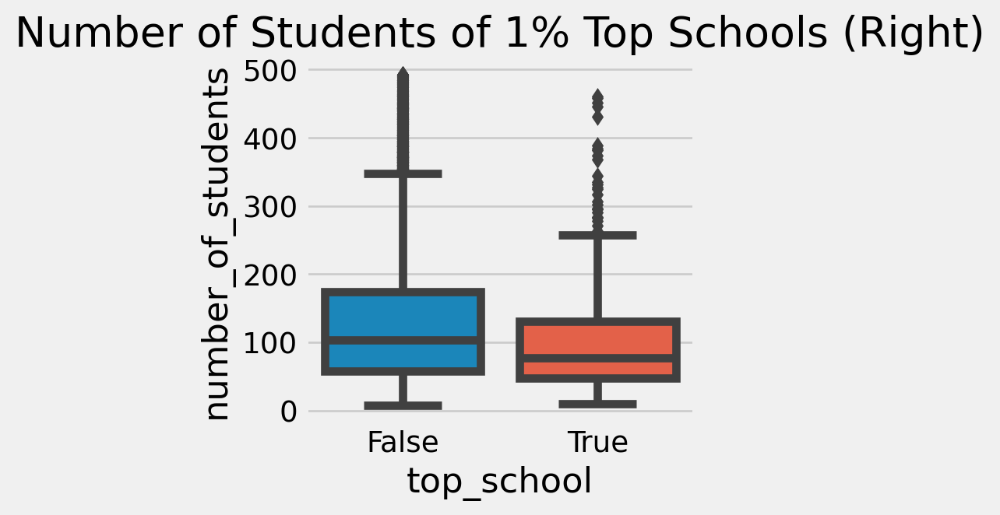
Standard Errors - Example

We can see that the top 1% of schools have a lot fewer students than the rest of the schools.
This might lead us to draw some conclusions, like “smaller schools are better”.
Standard Errors - Example
- Now let’s take a look at the full distribution of scores by school size.
q_99 = np.quantile(df["avg_score"], .99)
q_01 = np.quantile(df["avg_score"], .01)
plot_data = (df
.sample(10000)
.assign(Group = lambda d: np.select([d["avg_score"] > q_99, d["avg_score"] < q_01],
["Top", "Bottom"], "Middle")))
plt.figure(figsize=(5,5))
sns.scatterplot(y="avg_score", x="number_of_students", hue="Group", data=plot_data)
plt.title("ENEM Score by Number of Students");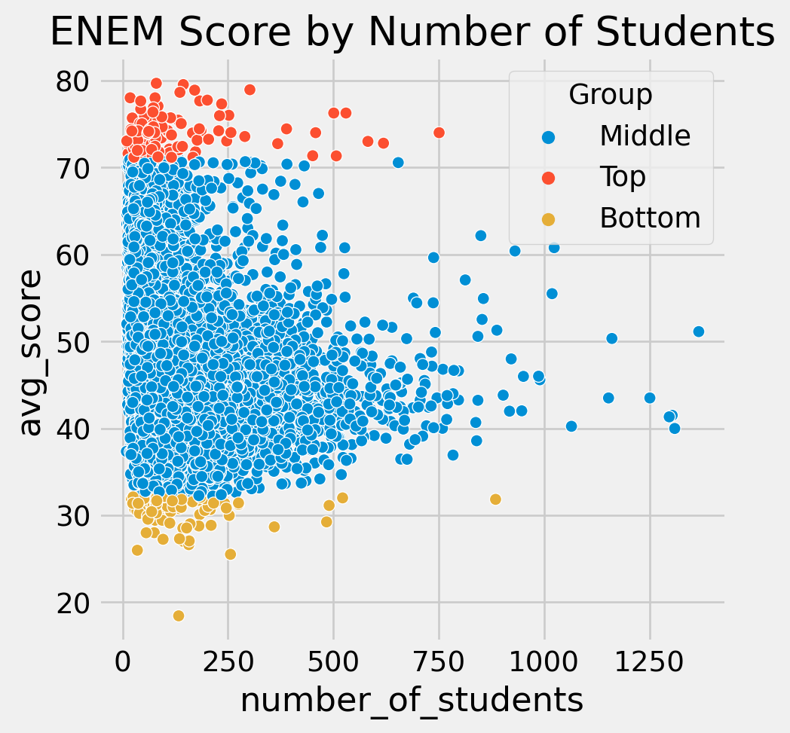
Standard Errors - Example
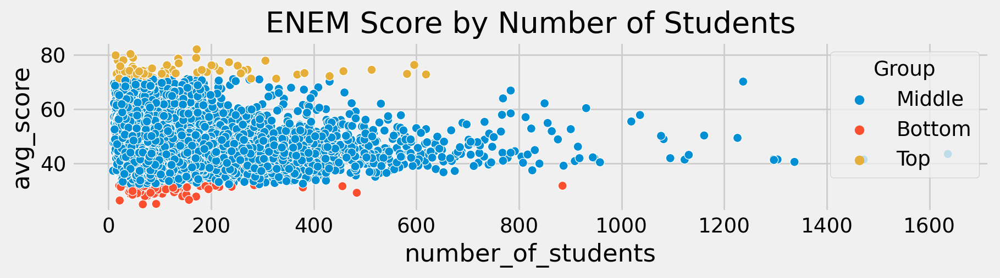
This captures exactly what we would expect if there was no relationship between school size and student performance.
Our false conclusion is a direct result of the formula \(\text{SE} = \frac{\sigma}{\sqrt{n}}\).
Since each observation in our dataset is a sample average, the schools with a lot of students give very precise estimates of the true mean, while the schools with fewer students give noisier estimates.
Example: An Evaluation of Online Learning
Standard Errors in a Causal Context
Let’s return to causal inference.
We will explore the following data, which contain the results of an RCT that randomized students into online and face-to-face sections of a course.
This dataset contains observations of 323 students who were randomized into three different class formats. It comes from:
- Alpert et al. 2016 AER. A Randomized Assessment of Online Learning.
| gender | asian | black | hawaiian | hispanic | unknown | white | format_ol | format_blended | falsexam | |
|---|---|---|---|---|---|---|---|---|---|---|
| 0 | 0 | 0.0 | 0.0 | 0.0 | 0.0 | 0.0 | 1.0 | 0 | 0.0 | 63.29997 |
| 1 | 1 | 0.0 | 0.0 | 0.0 | 0.0 | 0.0 | 1.0 | 0 | 0.0 | 79.96000 |
| 2 | 1 | 0.0 | 0.0 | 0.0 | 0.0 | 0.0 | 1.0 | 0 | 1.0 | 83.37000 |
Standard Errors in a Causal Context
- Since these data come from an RCT, we can estimate the ATE by simply comparing the average scores of the different treatment groups.
(data
.assign(class_format = np.select(
[data["format_ol"].astype(bool), data["format_blended"].astype(bool)],
["online", "blended"],
default="face_to_face"
))
.groupby(["class_format"])
.mean())| gender | asian | black | hawaiian | hispanic | unknown | white | format_ol | format_blended | falsexam | |
|---|---|---|---|---|---|---|---|---|---|---|
| class_format | ||||||||||
| blended | 0.550459 | 0.217949 | 0.102564 | 0.025641 | 0.012821 | 0.012821 | 0.628205 | 0.0 | 1.0 | 77.093731 |
| face_to_face | 0.633333 | 0.202020 | 0.070707 | 0.000000 | 0.010101 | 0.000000 | 0.717172 | 0.0 | 0.0 | 78.547485 |
| online | 0.542553 | 0.228571 | 0.028571 | 0.014286 | 0.028571 | 0.000000 | 0.700000 | 1.0 | 0.0 | 73.635263 |
Standard Errors in a Causal Context
| gender | asian | black | hawaiian | hispanic | unknown | white | format_ol | format_blended | falsexam | |
|---|---|---|---|---|---|---|---|---|---|---|
| class_format | ||||||||||
| blended | 0.550459 | 0.217949 | 0.102564 | 0.025641 | 0.012821 | 0.012821 | 0.628205 | 0.0 | 1.0 | 77.093731 |
| face_to_face | 0.633333 | 0.202020 | 0.070707 | 0.000000 | 0.010101 | 0.000000 | 0.717172 | 0.0 | 0.0 | 78.547485 |
| online | 0.542553 | 0.228571 | 0.028571 | 0.014286 | 0.028571 | 0.000000 | 0.700000 | 1.0 | 0.0 | 73.635263 |
- For reference, the averages of these variables are:
| gender | asian | black | hawaiian | hispanic | unknown | white | format_ol | format_blended | falsexam | |
|---|---|---|---|---|---|---|---|---|---|---|
| 0 | 0.578947 | 0.214575 | 0.068826 | 0.012146 | 0.016194 | 0.004049 | 0.684211 | 0.291022 | 0.337461 | 76.627336 |
Standard Errors in a Causal Context
- Now let’s take a closer look at the average scores by treatment group.
class_format
blended 77.093731
face_to_face 78.547485
online 73.635263
Name: falsexam, dtype: float64- Since these data come from an RCT, we can estimate the ATE by simply comparing the average scores of the different treatment groups, relative to the control group (face-to-face).
Online format changed test scores by -4.912 points.
Blended format changed test scores by -1.454 points.Standard Errors in a Causal Context
- Online format decreased test scores by almost 5 points, while the blended format decreased test scores by almost 2 points.
- Relative to the face-to-face format.
- But because of the relatively small sample, there’s a chance that our estimates are wrong.
- We can use the standard error of the sample average to quantify the uncertainty of our estimates.
- Having a low standard error (relative to the size of the effect) gives us more confidence that the estimate is correct.
SE for Online: 1.54 points
SE for Face to Face: 0.872 pointsConfidence Intervals
Confidence Intervals
We can use the standard error of the sample average to construct a confidence interval around our estimate.
A confidence interval is a range of values that we are confident contains the true value of the parameter we are trying to estimate.
The confidence interval is constructed by taking the sample average and adding and subtracting a multiple of the standard error.
- The multiple we use is determined by how confident we want to be that the true value is in the interval.
- If the estimator takes a normal distribution, then we can use the quantiles of the normal distribution to determine the multiple.
Confidence Intervals
- Let’s suppose we have a true abstract distribution of students’ test scores to better grasp this.
- Imagine it is a normal distribution with a true mean of 74 and a true standard deviation of 2.
- We can simulate a sample of 500 students from this distribution and calculate the sample average.
def run_experiment():
return np.random.normal(74, 2, 500)
np.random.seed(42)
plt.figure(figsize=(8,2.5))
freq, bins, img = plt.hist([run_experiment().mean() for _ in range(10000)], bins=40, label="Experiment Means")
plt.vlines(74, ymin=0, ymax=freq.max(), linestyles="dashed", label="True Mean", color="orange")
plt.legend();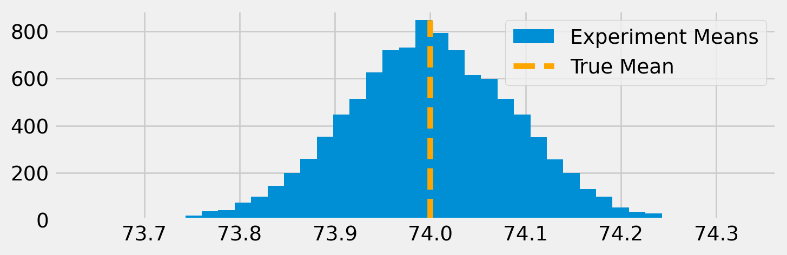
Aside: Central Limit Theorem
- Let’s try the same thing, but with the data coming from a uniform distribution.
# these numbers are not realistic, but they have average 74
def run_experiment_unif():
return np.random.uniform(64, 84, 500)
np.random.seed(42)
plt.figure(figsize=(8,2.5))
freq, bins, img = plt.hist([run_experiment_unif().mean() for _ in range(10000)], bins=40, label="Experiment Means")
plt.vlines(74, ymin=0, ymax=freq.max(), linestyles="dashed", label="True Mean", color="orange")
plt.legend();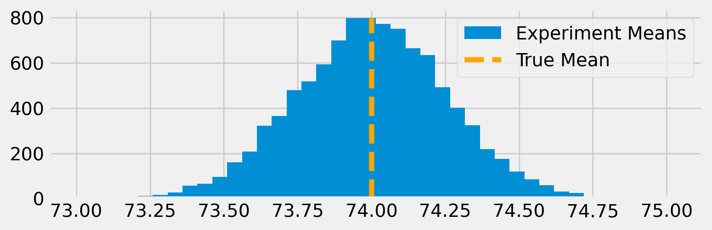
- In fact, the central limit theorem tells us that the sample average of any * distribution will be normally distributed as the sample size gets large.
- *As long as the mean and variance of the distribution are finite.
Confidence Intervals
Of course, usually we won’t have the luxury of simulating our experiment thousands of times to get a sense of the distribution of our estimator.
But we can use the CLT, and the approximate normality of the sample mean, to construct a confidence interval around our estimate.
Confidence intervals are coupled with a probability (usually 90%, 95%, or 99%).
- This probability tells us the percentage of times that we would expect an experiment to produce an estimate within the interval.
Confidence Intervals
- These confidence intervals would look something like this:
np.random.seed(321)
exp_data = run_experiment()
exp_se = exp_data.std() / np.sqrt(len(exp_data))
exp_mu = exp_data.mean()
ci = (exp_mu - 2 * exp_se, exp_mu + 2 * exp_se)
print(ci)
x = np.linspace(exp_mu - 4*exp_se, exp_mu + 4*exp_se, 100)
y = stats.norm.pdf(x, exp_mu, exp_se)
plt.plot(x, y, color="orange")
plt.vlines(ci[1], ymin=0, ymax=1)
plt.vlines(ci[0], ymin=0, ymax=1, label="95% CI")
plt.legend()
plt.show()(73.82718114045632, 74.17341543460314)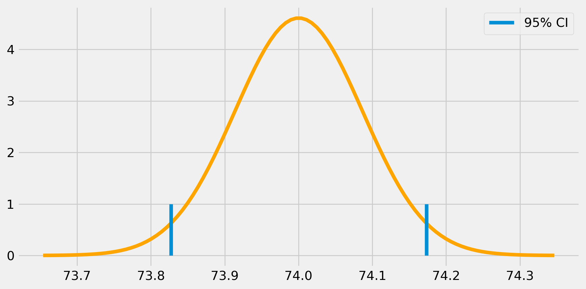
Confidence Intervals
- Back to our classroom experiment, we can construct the confidence interval for the mean exam score in both online and face-to-face formats.
95% CI for Online: (70.56094429049804, 76.7095818797147)
95% for Face to Face: (76.80278229206951, 80.29218687459715)- Not only are the means different, but the confidence intervals also do not overlap.
- This gives us a good amount of certainty that online format actually does decrease test scores.
Confidence Intervals
- Without confidence intervals, point estimates are not very useful.
- We can’t tell if the difference between the means is due to chance or not.
- We can’t tell if the difference is large or small.
- Therefore some measure of uncertainty should always be reported along with the point estimate.
- A common mistake is to interpret the confidence interval as the probability that the true value is in the interval.
- This is not technically correct.
- The true value is either in the interval or it is not.
- Really, the confidence interval should be interpreted as the frequency with which the interval would contain the true value, if the experiment were repeated many times.
Hypothesis Testing
Hypothesis Testing
- Another way to quantify the uncertainty of our estimates is to use hypothesis testing.
- Is the difference in means statistically different from zero (or some other value)?
- Recall that the sum or difference of two independent normal random variables is also normally distributed.
- Therefore, we can use the CLT to construct a test statistic that is normally distributed.
- The resulting mean will be the sum or difference between the two distributions, while the variance will always be the sum of their variances:
- \(N(\mu_1, \sigma_1^2) - N(\mu_2, \sigma_2^2) = N(\mu_1 - \mu_2, \sigma_1^2 + \sigma_2^2)\)
- \(N(\mu_1, \sigma_1^2) + N(\mu_2, \sigma_2^2) = N(\mu_1 + \mu_2, \sigma_1^2 + \sigma_2^2)\)
Hypothesis Testing
- Hypothesis testing is another way to quantify the uncertainty of our estimates.
- It is very closely related to confidence intervals.
- If we have two normal distributions, and want to test if the difference between the means is zero, we can construct a test statistic that is normally distributed.
- \(\mu_{diff} = \mu_1 - \mu_2\)
- \(SE_{diff} = \sqrt{\sigma_1^2/n_1 + \sigma_2^2/n_2}\)
Hypothesis Testing
Returning to our classroom experiment, we can construct a hypothesis test to determine if the difference in means is different from zero.
The null hypothesis is that the difference in means is zero.
- \(H_0: \mu_{online} - \mu_{face-to-face} = 0\)
The alternative hypothesis is that the difference in means is not zero.
- \(H_1: \mu_{online} - \mu_{face-to-face} \neq 0\)
Notice that the alternative hypothesis is not that the difference is positive or negative.
- This is because we are using a two-sided test.
- We are testing if the difference is different from zero, not if it is greater or less than zero.
- The hypotheses are mutually exclusive and collectively exhaustive.
Hypothesis Testing
Hypothesis Testing
Based on the results, we can see that based on our original standard errors, we are 95% confident that the true difference in means is between -8.37 and -1.63.
Therefore, we can reject the null hypothesis that the difference in means is zero, at the 5% level.
Alternatively, we can say that the difference in means is statistically significant at the 5% level.
Hypothesis Testing
- We can also construct a z-statistic to test the null hypothesis.
- \(z = \frac{\mu_{diff} - H_0}{SE_{diff}} = \frac{\mu_1 - \mu_2 -0 }{\sqrt{\sigma_1^2/n_1 + \sigma_2^2/n_2}}\)
- The z-statistic is the number of standard errors that the difference in means is from the null hypothesis.
- Under the null hypothesis, the z-statistic is normally distributed with mean zero and variance one.
- \(z \sim N(0,1)\)
- Therefore, we can simply calculate the z-statistic and compare it to the quantiles of the normal distribution to determine if the difference in means is statistically significant.
P-Values
P-Values
- With all of the previous methods, we have been able to answer yes-or-no questions about our estimates.
- Is the difference in means statistically different from zero at the 95% level?
- Is the difference in means statistically significant at the 5% level?
- However, a more useful question might be how different are the means?
- Is the difference in means large or small?
- Is the difference in means practically significant?
- To answer these questions, we can use p-values.
P-Values
The p-value is the probability of observing a test (z) statistic at least as extreme as the one we calculate, if the null hypothesis is true.
P-values allow us to quantify uncertainty without needing to specify a confidence level.
- We can simply report the p-value and let the reader decide what level of uncertainty they are comfortable with.
The p-value is calculated by taking the area under the normal distribution curve that is more extreme than the test statistic.
- The p-values is not the probability that the null hypothesis is true \(P(H_0\mid data)\).
- Instead it is the probability of observing the data, under the null \(P(data\mid H_0)\).
P-Values
- Let’s calculate the p-value for our classroom experiment.
z = diff_mu / diff_se
p_value = 2 * (1 - stats.norm.cdf(z))
print(f"z-statistic: {z:.3}")
print(f"p-value: {p_value:.3}")z-statistic: -2.78
p-value: 1.99- The p-value of 0.0027 tells us that we can reject the null hypothesis at the 5% level.
- The difference in means is statistically significant at the 5% level. (The 95% confidence interval does not contain zero.)
- In fact, we could reject the null hypothesis at the 1% level as well. (The 99% confidence interval does not contain zero.)
- However, we could not reject the null hypothesis at the 0.1% (or 0.2%) level. (The 99.9% confidence interval does contain zero.)
Monte-Carlo Methods and Bootstrapping
Monte-Carlo Methods
- We can use Monte-Carlo simulation to simulate the distribution of an estimator, and get some idea of how it will perform.
- This is especially useful for estimators that are not asymptotically normal.
- For example the minimum or maximum of a uniform distribution is not asymptotically normal.
- Monte-Carlo simulations involve simulating the experiment many times, and calculating the estimator each time, similar to what we did with the
run_experimentfunction before.- This knowledge can also be used to construct confidence intervals.
Monte-Carlo Methods
- Let’s say that instead of the mean, we want to estimate the
maximumparameter of a uniform distribution.- \(X \sim U(0,\alpha)\)
- \(\hat{\alpha} = \max_i(X_i)\) (?)
- Note that this is an example of an estimator that is not based on a sample average.
- Therefore, the CLT does not apply, and the estimator is not asymptotically normal.
- We can use the same type of simulations as before to get an idea of how this intuitive estimator is distributed.
Monte-Carlo Methods
def run_experiment_unif(lb = 0, ub = 100):
return np.random.uniform(lb, ub, 500)
np.random.seed(421)
plt.figure(figsize=(5,5))
max_estimates = np.array([run_experiment_unif().max() for _ in range(10000)])
freq, bins, img = plt.hist(max_estimates, bins=40, label="Experiment Maxima")
plt.vlines(100, ymin=0, ymax=freq.max(), label="True Max", color="green")
plt.vlines(np.mean(max_estimates), ymin=0, ymax=freq.max(), linestyles="dashed", label="Expected Value of the Estimator", color="orange")
plt.legend();
print("The standard error of our estimator is approximately", np.std(max_estimates))The standard error of our estimator is approximately 0.20073906450653084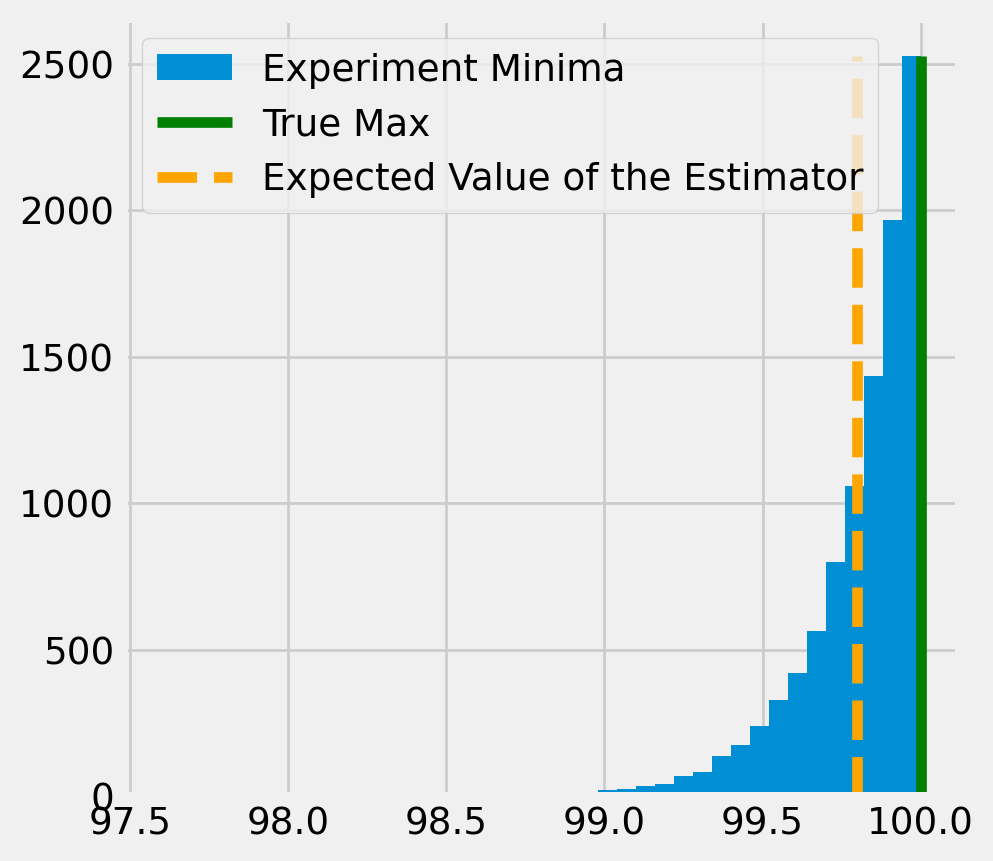
Monte-Carlo Methods
- While the distribution of the estimator is not normal, we can still construct an empirical confidence interval by taking the quantiles of the distribution of the estimator.
- This gives us some kind of measure of how uncertain we are about the true value of the parameter, given our estimate and the data we have.
- By looking at the graph, we can tell that this estimator is actually biased! Even though it is an intuitive (and consistent estimator), because we have a finite sample, the maximum of the sample is always going to be less than the true maximum.
- What is the expected value of \(\max_i (X_i)\)? (it’s not \(\alpha\)!)
Monte-Carlo Methods
- Another estimator that we could try is using \(\hat{\alpha}_2 = 2\bar{X}\)
- Since the lower bound is 0, the mean of the uniform distribution is \(\frac{\alpha}{2}\).
- The expected value \(E[\bar{X}] = \frac{\alpha}{2}\), so \(E[2\bar{X}] = \alpha\), and this estimator is actually unbiased.
- We can uses Monte-Carlo simulation to get an idea of how this estimator is distributed.
Monte-Carlo Methods
plt.figure(figsize=(5,5))
np.random.seed(421)
mean_estimates = np.array([2*run_experiment_unif().mean() for _ in range(10000)])
freq, bins, img = plt.hist(mean_estimates, bins=40, label="Mean-based Estimator")
plt.vlines(100, ymin=0, ymax=freq.max(), label="True Max", color="green")
plt.vlines(np.mean(mean_estimates), ymin=0, ymax=freq.max(), linestyles="dashed", label="Expected Value of the Mean-based Estimator", color="orange")
plt.legend();
print("The standard error of our mean-based estimator is approximately", np.std(mean_estimates))The standard error of our mean-based estimator is approximately 2.580268375420416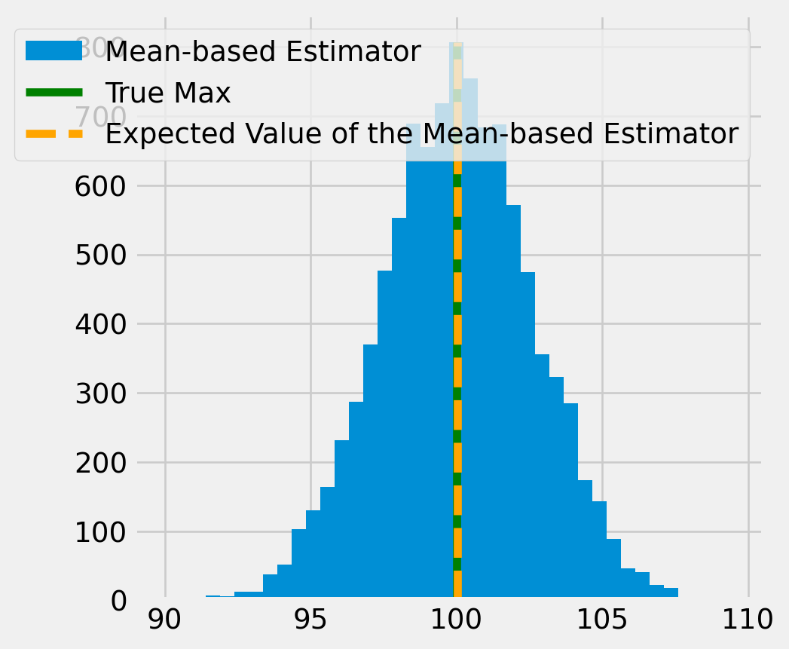
Bootstrapping
- Monte-carlo is a good option when we know the distribution of the estimator, but what if we don’t?
- In this case, we can use bootstrapping to construct confidence intervals.
- Bootstrapping is a non-parametric method for estimating the distribution of an estimator.
- It is based on the idea of resampling the data.
- Resampling is to create a new sample by drawing observations from the original sample with replacement.
- This means that some observations will be sampled more than once, and some will not be sampled at all.
- The new sample will be the same size as the original sample.
- Let’s see what this would look like in our uniform distribution example
Bootstrapping
plt.figure(figsize=(5,5))
experiment = run_experiment_unif(ub=100)
resample = lambda sample_size: np.random.choice(run_experiment_unif(), size=sample_size, replace=True)
mean_estimates = np.array([2*resample(500).mean() for _ in range(10000)])
max_estimates = np.array([resample(500).max() for _ in range(10000)])
freq, bins, img = plt.hist(mean_estimates, bins=40, label="Mean-based Estimator", alpha=0.5)
freq2,bins2,img2 = plt.hist(max_estimates, bins=40, label="Max-based Estimator", color="red", alpha=0.5)
plt.vlines(100, ymin=0, ymax=freq2.max(), label="True Max", color="green")
plt.vlines(np.mean(mean_estimates), ymin=0, ymax=freq2.max(), linestyles="dashed", label="Expected Value of the Mean-based Estimator", color="blue")
plt.vlines(np.mean(max_estimates), ymin=0, ymax=freq2.max(), linestyles="dashed", label="Expected Value of the Max-based Estimator", color="red")
plt.legend();
print("The bootstrap standard error of our mean-based estimator is approximately", np.std(mean_estimates))
print("The bootstrap standard error of our max-based estimator is approximately", np.std(max_estimates))The bootstrap standard error of our mean-based estimator is approximately 3.622011142890086
The bootstrap standard error of our max-based estimator is approximately 0.31176197251081217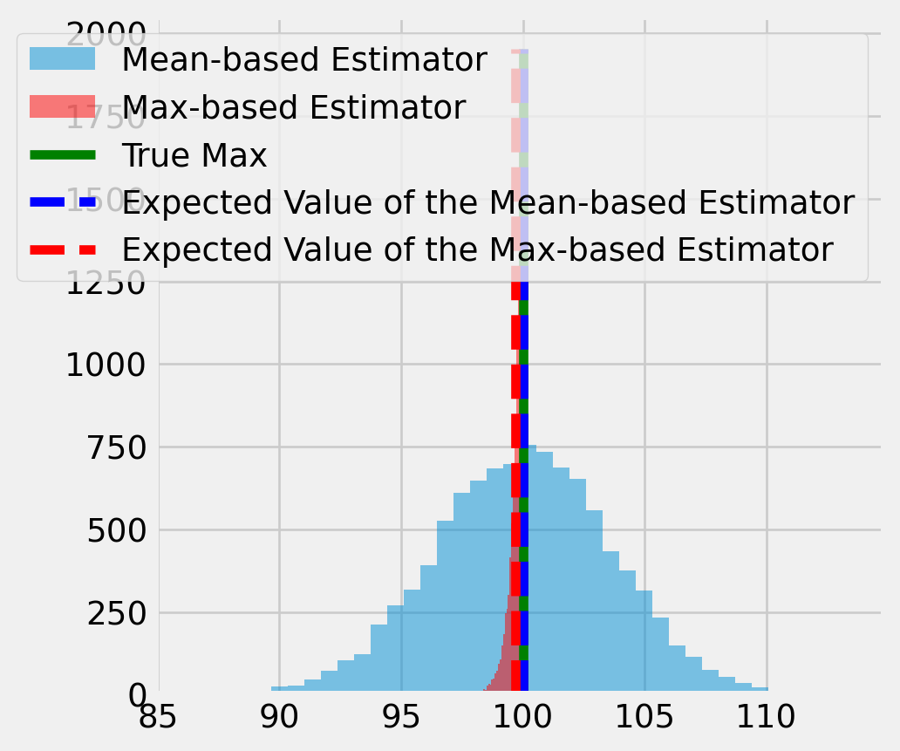
Bootstrapping
- Bootstrapping can be a good way to approximate the distribution of an estimator when we don’t have an analytical solution.
- However, it can be computationally expensive, since we need to run the estimation many times.
- Generally, we can think of bootstrap errors as being a “coarse” approximation to the true standard errors. That is, they are likely to be different than the asymptotic standard errors.
- They may be either larger or smaller than the asymptotic standard errors.
- They are likely to be larger when the sample size is small, and smaller when the sample size is large.
- This is not a hard-and-fast rule, and it depends on the estimator.
- Even though we don’t have to make any assumptions about the distribution of the estimator, we still do have to make an assumption about our sample, (i.e. that it is representative of the population).
The Bias-Variance Tradeoff
The Bias-Variance Tradeoff
The bias-variance tradeoff is a fundamental concept in statistics and machine learning.
There is a often a tradeoff between the bias and variance of an estimator.
- An estimator with low bias will have high variance.
- An estimator with low variance will have high bias.
While we generally want to minimize both bias and variance, it can often be the case that introducing a little bias will reduce the variance of the estimator by a large amount.
If you are choosing between estimators that are consistent, then it might be ok to introduce a little bias if it buys you a lot of reduction in the variance.
The Bias-Variance Tradeoff
Let’s look at another example.
Rembember our first example of a biased estimator, the sample variance.
The simple sample variance (without the Bessel correction) is biased because \(E[\frac{1}{n} \sum_{i=1}^n (x_i - \bar{x})^2] = \frac{n-1}{n}\sigma^2\).
- The bias term is \(\frac{1}{n}\sigma^2\).
For an unbiased estimator, we simply need to replace \(\frac{1}{n}\) with \(\frac{1}{n-1}\).
- This gets rid of the bias term, and it is still consistent (since the difference between \(\frac{1}{n}\) and \(\frac{1}{n-1}\) goes to zero as \(n\) gets large).
The Bias-Variance Tradeoff
- Let’s consider instead the whole class of estimators of the form \(\hat{\sigma}_c^2 = c \sum_{i=1}^n (x_i - \bar{x})^2\).
- The simple sample variance is the special case where \(c = \frac{1}{n}\).
- The unbiased sample variance is the special case where \(c = \frac{1}{n-1}\).
- Remember that \(E[\hat{\sigma}_\frac{1}{n}^2] = \frac{n-1}{n}\sigma^2\).
- The bias term is \(\frac{1}{n}\sigma^2\).
- We can use the linearity of expectation to calculate the bias of any estimator of this form.
- \(E[\hat{\sigma}_c^2] = c (n-1) \sigma^2\).
- Therefore, in order to minimize the bias, we need to choose \(c = \frac{1}{n-1}\).
The Bias-Variance Tradeoff
- However, we can also calculate the variance of this estimator.
- \(Var(\hat{\sigma}_c^2) = 2c^2 \sigma^4 (n-1)\)
- Instead of finding the value of \(c\) that minimizes the bias, we can find the value of \(c\) that minimizes the variance (MSE) of the estimator.
- \(MSE(\hat{\sigma}^2_c) = E[(\hat{\sigma}_c^2 - \sigma^2)^2] = E[\hat{\sigma}_c^2 - \sigma^2]^2 + Var(\hat{\sigma}_c^2)\)
- (\(Var(\hat{\sigma}_c^2)\) is the variance of the estimator, or the square of its standard error.)
- Plugging in our formula for the variance, \(MSE(\hat{\sigma}^2_c) = (c(n-1)-1)^2 \sigma^4 + 2c^2 \sigma^4 (n-1)\).
- If we wanted to minimize the standard error of the estimate, instead of the bias, minimizing this MSE would actually lead us to choose \(c = \frac{1}{n+1}\).
The Bias-Variance Tradeoff
- Let’s plot the bias and variance of the estimator for different values of \(c\).
def bias_sq(c,sigma=5,n=10):
return (c * (n-1)-1)**2 * sigma**4
def mse(c,sigma=5,n=10):
return (c*(n-1)-1)**2 * sigma**4 + 2 * c**2 * sigma**4 * (n-1)
n = 10
sigma = 5
c = np.linspace(0, 0.2, 100)
plt.plot(c, bias_sq(c), label="Bias Squared")
plt.plot(c, mse(c), label="MSE", color = "red")
plt.vlines(1/(n-1), ymin=0, ymax=800, linestyles="dashed", label="1/(n-1)")
plt.vlines(1/(n+1), ymin=0, ymax=800, linestyles="dashed", color = "red", label="1/(n+1)")
plt.legend(loc="upper left")
plt.show()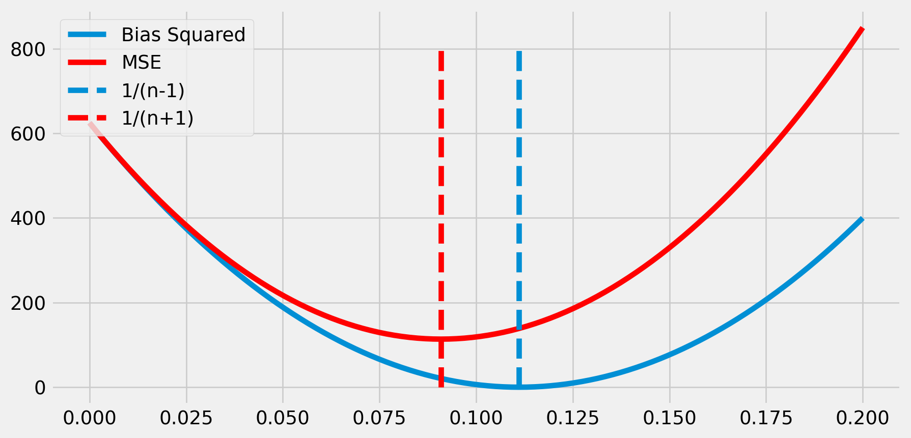
The Bias-Variance Tradeoff
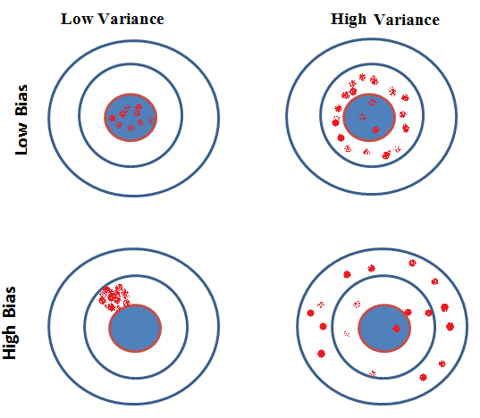Source: https://en.wikipedia.org/wiki/Bias_of_an_estimator
The Bias-Variance Tradeoff
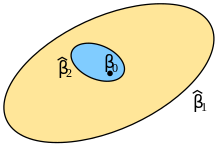Source: https://www.shiksha.com/online-courses/articles/bias-and-variance/
Credits
This lecture draws heavily from Causal Inference for the Brave and True: Stats Review - The Most Dangerous Equation by Matheus Facure.